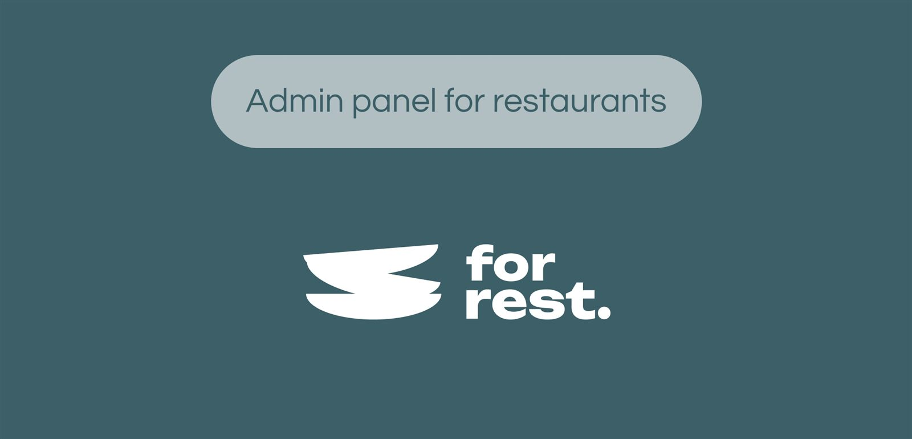
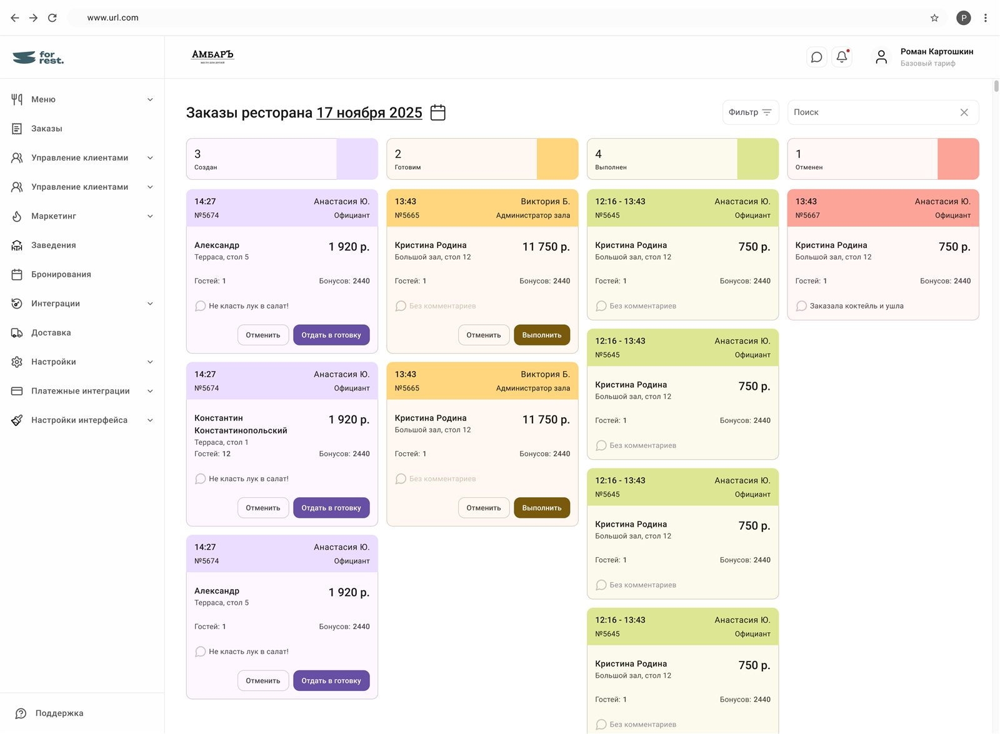
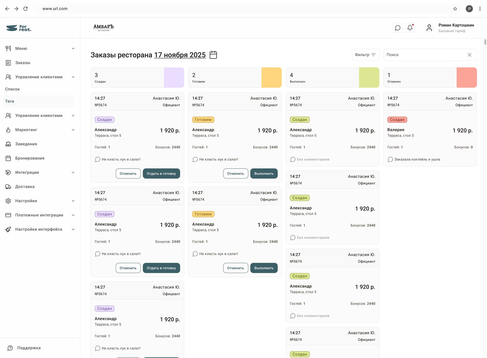
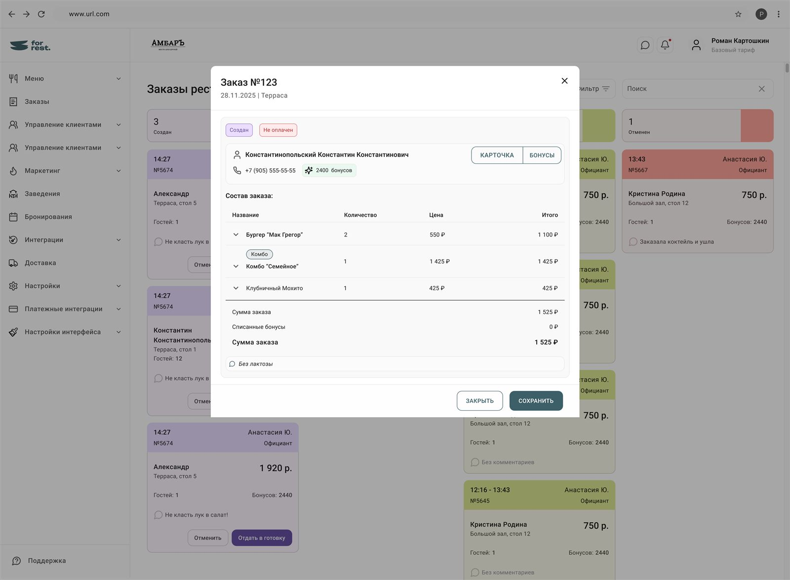
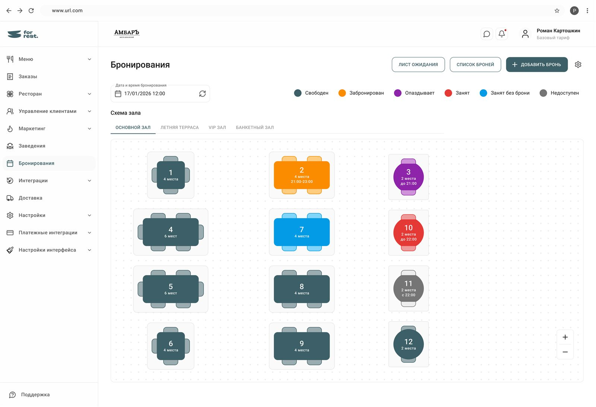
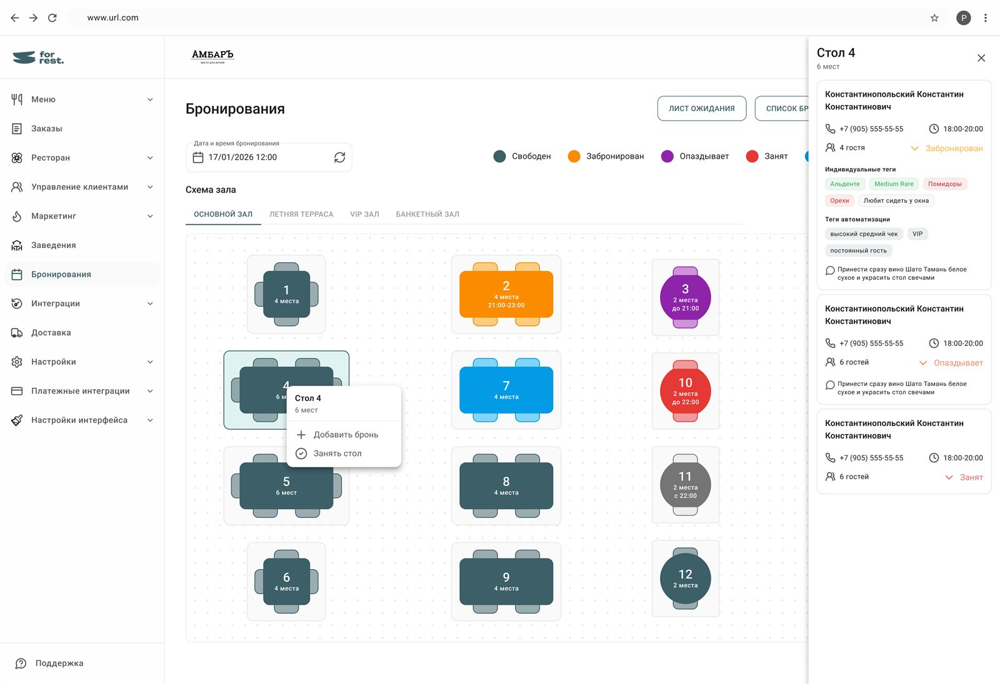
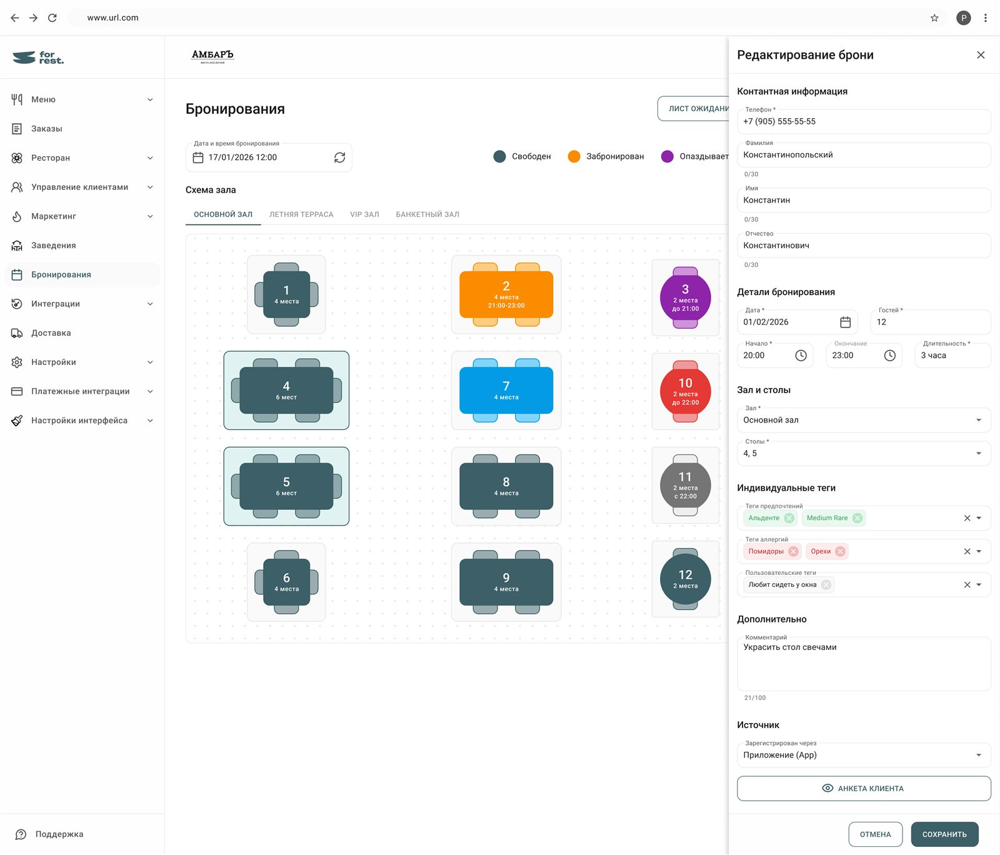
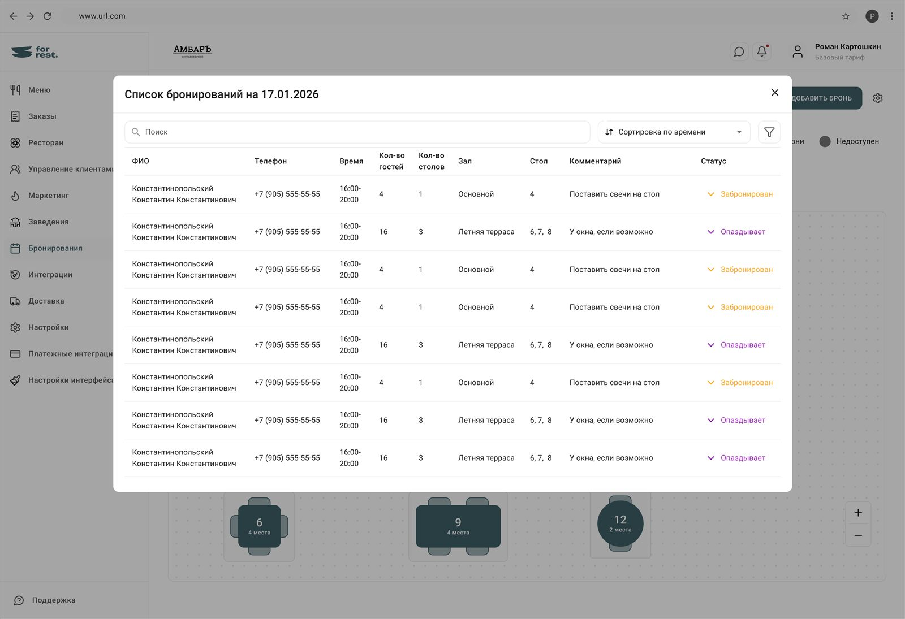

Дизайн интерфейсов для панели администратора ресторанаRestaurant admin panel interfaces
ERP/CRM-система для ресторанов · с ноября 2025ERP/CRM for restaurants · since November 2025
О проектеAbout
Стартап, который разрабатывает систему администрирования ресторанов. Основные пользователи: владелец ресторана, администратор и официанты.
Я пришла на проект, когда уже большая часть функционала была разработана другими дизайнерами (бывшими). Моя задача состояла в том, чтобы разрабатывать новые функции для первой версии системы. А также переносить эти макеты на новую дизайн-систему для второй версии продукта.
В портфолио я покажу основные работы по первой версии продукта. По ссылке на фигму можно изучить макеты детальнее.
A startup building a restaurant administration system. Core users: restaurant owners, administrators and waitstaff.
I joined when most of the functionality had already been designed by previous designers. My job was to design new features for v1 — and migrate those layouts onto the new design system for v2.
This case shows the key v1 work. The Figma link has the layouts in detail.
ПроцессыProcess
- Бизнес ставит задачу на разработку функционала
- Аналитики проводят анализ конкурентов, выявляют потребности пользователей и взаимосвязи в системе, составляют ТЗ и предоставляют референсы или прототипы
- Дизайнер, используя дизайн-систему MUI для базовой версии и Mantis для новой версии системы, собирает макеты, прорабатывает взаимодействие пользователя с функционалом и предоставляет состояния макетов при этих взаимодействиях
- Улучшения решений прорабатываются посредством общения с аналитиком, поставившим задачу
- Business requests a feature
- Analysts research competitors, uncover user needs and system relations, write specs and provide references or prototypes
- Using the MUI design system for the base version and Mantis for the new one, the designer builds layouts, details user interactions and provides layout states for them
- Improvements are worked through with the analyst who set the task
Продуктовые фичиProduct features
Спроектировала систему администрирования для 3 ролей (владельцы, администраторы, официанты). Внедрила ключевые функциональные модули: управление заказами, доставкой, бронированием и сводной аналитикой. Разработала интерактивный конструктор зала с визуальной расстановкой столов в реальном времени для бронирования, а также канбан-доску для управления потоком заказов.
Designed an administration system for 3 roles (owners, administrators, waitstaff). Implemented key modules: order management, delivery, reservations and consolidated analytics. Built an interactive dining-room configurator with real-time visual table layout for reservations, plus a Kanban board for the order flow.
МетрикиMetrics
После запуска обновлённых сценариев время обработки заказа сократилось на ~28%, создание бронирования — на ~25%, а количество ошибок и конфликтов при работе с бронями снизилось на ~37%.
After the updated flows launched, order processing time dropped by ~28%, reservation creation by ~25%, and errors and conflicts around reservations fell by ~37%.
Дизайн-системаDesign system
Осуществила бесшовную миграцию макетов первой версии со старого UI-фреймворка (MUI) на новую кастомную дизайн-систему (Mantis) для v2 продукта.
Seamlessly migrated v1 layouts from the old UI framework (MUI) to the new custom design system (Mantis) for the v2 product.
ДизайныDesigns
Канбан-доска с заказами для официантов в двух вариантах оформленияOrder Kanban for waitstaff, two visual variants



Бронирование столов, для официантов и администраторовTable reservations, for waitstaff and admins



